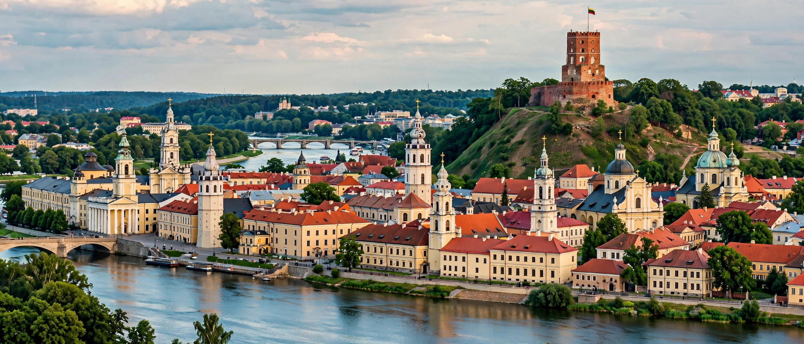

[Image placeholder: Vilnius Old Town and Gediminas Tower]| Country | Lithuania |
|---|---|
| Founded | 1323 (Gediminas's letters; legend of the Iron Wolf) |
| Population | About 600,000 |
| Old Town | UNESCO World Heritage Site; one of Europe's largest baroque old towns |
**Vilnius** is the capital and largest city of Lithuania, at the confluence of the Vilnia and Neris rivers in the southeast of the country. Founded as capital of the Grand Duchy of Lithuania, legendary home of Grand Duke Gediminas's dream of an iron wolf, it grew into a great multicultural city of the Polish–Lithuanian Commonwealth — Lithuanian, Polish, Jewish (the 'Jerusalem of Lithuania', home of the Vilna Gaon), Belarusian, Russian and Tatar communities.
Vilnius University (1579) is among the oldest in Eastern Europe. The city's Jews were almost entirely murdered in the Holocaust (the Ponary massacre). Vilnius was a centre of the Singing Revolution — the Baltic Way human chain of 1989 ran from here — and Lithuania's 1990 independence declaration, defended at the TV Tower in January 1991, made it a symbol of the USSR's end.
Since EU accession the baroque Old Town has been restored, the self-declared micronation-republic of Užupis (with its playful constitution) attracts artists, and a modern skyline has risen across the Neris in Šnipiškės. Vilnius is a growing fintech and laser-industry hub.